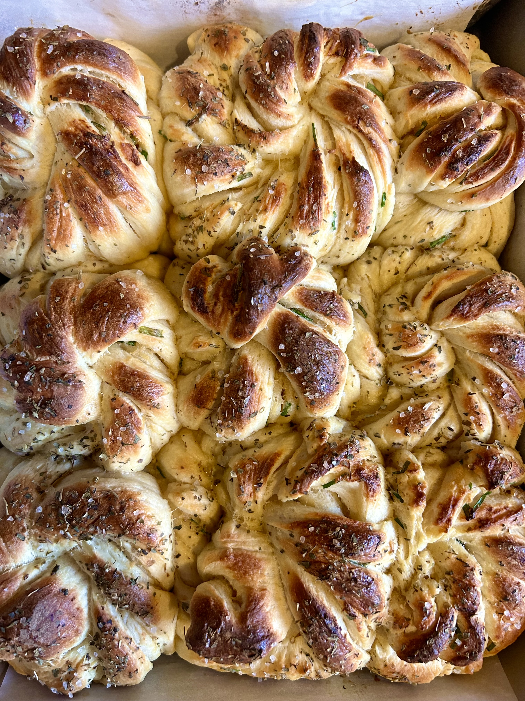

Garlic & Chive Twist Buns
Ingredients:
- Dough
- 170g sourcream
- 1 egg
- 25g sugar
- 495g bread flour
- 9g salt
- 25g butter
- 40g milk
- 5g instant yeast
- Tangzhong
- 90g milk
- 90g water
- 30g flour
- Filling
- 4 tbsp butter softened
- 1 tsp salt
- 1/3 cup chopped chives
- 2-3 whole heads of garlic
the more the better

Directions:
- Roast your garlic. Cut each head in half, drizzle with
olive oil, and enclose in aluminum foil. Bake for
45mins-1hr at 400F until soft and golden. Cool to room
temp.
- Make your Tangzhong. Whisk all tangzhong
ingredients in a small pot until no lumps remain. Then
stir continuously over medium heat until it resembles
mashed potatoes. Remove from heat and let cool for 5
mins.
- In the bowl of a stand mixer, add the tangzhong and
all other dough ingredients except for butter. Using the
dough hook attachment, mix for 5 mins until the dough
comes together. Add the butter and mix for 8-10 mins
or until a rough window pane is achieved.
- Shape the dough into a ball, place into a bowl, cover,
and let rise for 1.5hrs or until almost doubled in size
5. Deflate the dough and divide into 9 equal sections.
Form into balls. Cover and let rest for 10 mins.
Meanwhile lightly grease a 9"x9" pan and make your
filling by combining all filling ingredients. If your butter
is too soft, stick it into the fridge to chill. It should be
spreadable but not melting.
- Doing one at a time, roll the dough into a long oval
~8" long. Spread some of the filling on top then cut
slits lengthwise as shown in the video (don't cut all the
way). Then grab both ends and twist. Form it into a
knot. Place into the pan and repeat.
- Cover and let rise for ~30mins or until noticeably
puffy. Preheat oven to 350F.
- Lightly brush with an egg wash before baking. Bake
for 25-30mins or until the top is golden.
- Brush with 1 tbsp of melted butter mixed
with 1 tbsp of honey
optional